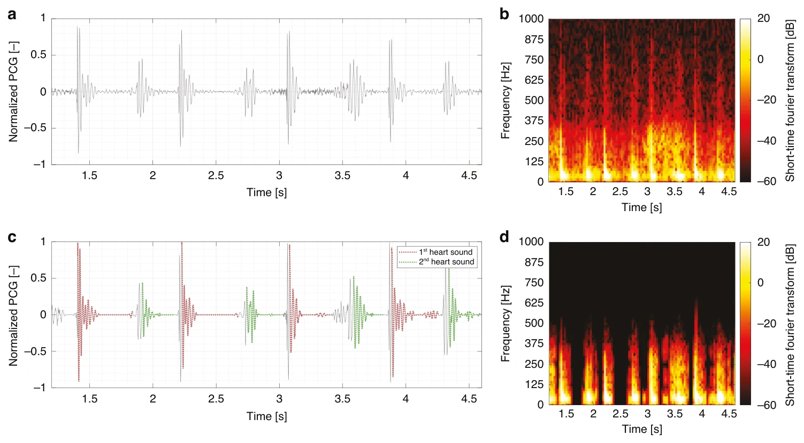
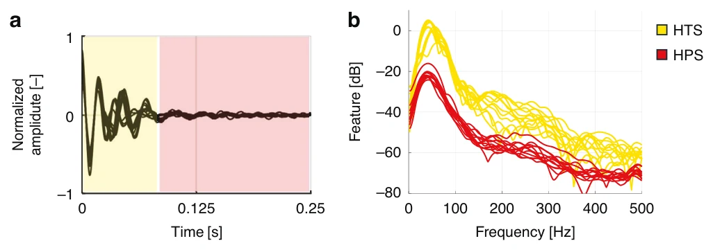
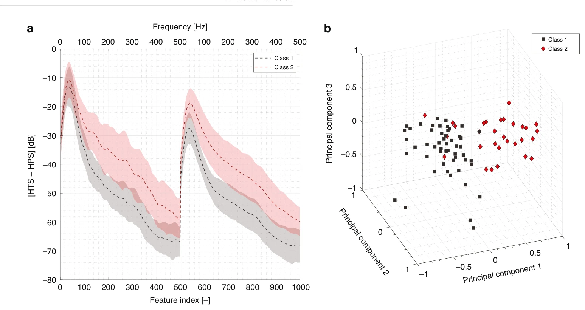
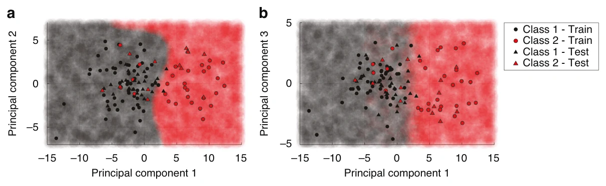

Abstract
Remote auscultation of children’s hearts is often limited by poor signal quality: breathing, movement and background noise mask the heart sounds, and telling pathological murmurs from innocent ones is difficult and operator-dependent, which leads to unnecessary referrals. In this clinical study, 135 children were examined with a digital stethoscope and echocardiography, and 90 with a confirmed diagnosis were included. Phonocardiograms were segmented and denoised with permutation-enhanced non-negative matrix factorization, and time-frequency features were used to train a support vector machine for each auscultation site.
Method
Each recording is segmented into heart cycles. Permuting the segmented beats provides the data to learn a non-negative matrix factorization basis of heart sounds; projecting the noisy spectrogram on this basis and thresholding the activations separates the heart signal from respiratory, motion and environmental noise. Spectral features of the systolic phase (HTS and HPS) are then extracted and classified.


Results
Across the five sites, specificity ranged from 70.4% to 100%, sensitivity from 25% to 75% and accuracy from 71.0% to 95.7%. Specificity was at least 88.2% at every site except the upper right sternal border. Combined, the classifiers reached 81.8% specificity, 66.7% sensitivity and 77.4% accuracy. The study shows that improving signal quality is a prerequisite for reliable automated murmur detection in tele-auscultation.


Cite this work
R. Malvermi, S. Mannarino, V. Garella, G. Greco, G. Fini, B. Baj, F. Antonacci, V. Calcaterra, and G. Zuccotti, “Enhancing pediatric cardiac auscultation with data-driven murmur detection: toward tele-consultation applications,” Pediatric Research, 2026. doi: 10.1038/s41390-026-05349-x
@article{malvermi2026murmur,
title = {Enhancing pediatric cardiac auscultation with data-driven murmur detection: toward tele-consultation applications},
author = {Malvermi, Raffaele and Mannarino, Savina and Garella, Vittoria and Greco, Gioele and Fini, Giulia and Baj, Beatrice and Antonacci, Fabio and Calcaterra, Valeria and Zuccotti, Gianvincenzo},
journal = {Pediatric Research},
year = {2026},
doi = {10.1038/s41390-026-05349-x}
}Figures are reproduced from the open-access article (© The Authors, CC BY 4.0).